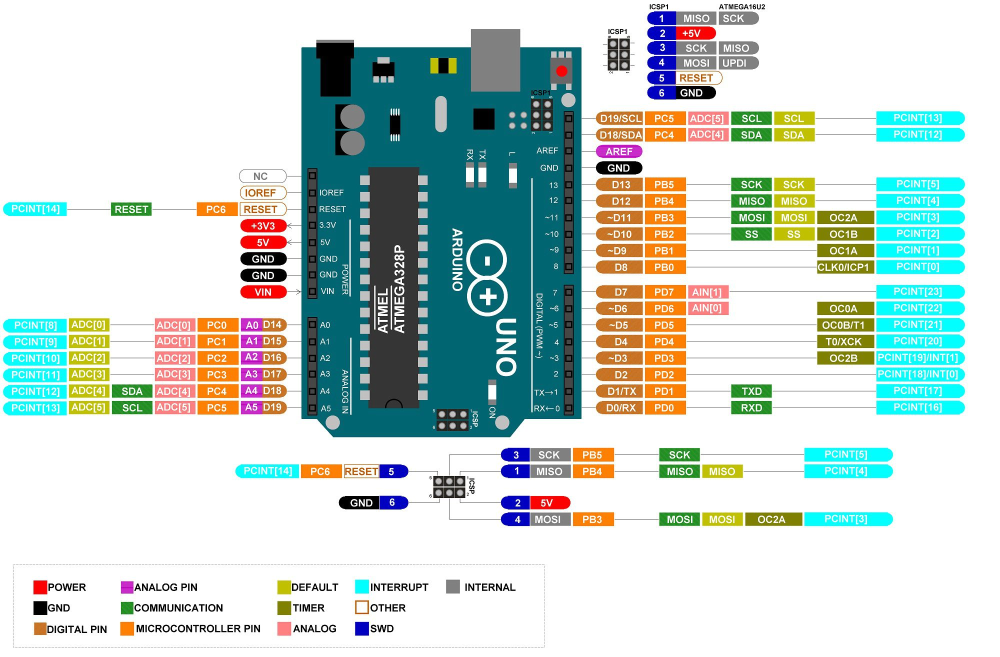

🧠 الأردوينو أونو هو العقل الذكي الصغير – بيشغل مشاريعك الإلكترونية 🎬
🔌 فيه 20 مدخل/مخرج – بس خد بالك! مش كل الأرجل زي بعض 😎
🔵 الأرجل الرقمية (0–13): دي on/off – تنفع للأزرار، الليدات، البازر، وهكذا.
🟢 الأرجل التناظرية (A0–A5): بتقرأ الحساسات بتفاصيل أكتر (زي مقدار الضوء أو الصوت 🎚)
⚡ أرجل الطاقة:
5V ➜ طاقة كاملة 💥
3.3V ➜ طاقة منخفضة للحساسات الحساسة
GND ➜ الأرض… هو مسار رجوع الكهرباء 🧲
📡 الأرجل زي RX/TX (0 & 1) دي للتواصل التسلسلي – بلاش تلعب فيهم إلا لو فاهم كويس 💬😅
🚨 خليك فاكر – بعض الأرجل الرقمية (زي 3، 5، 6، 9، 10، 11) بتدعم PWM – يعني تقدر تطلع إشارة شبه تناظرية ✨ (مفيدة لتعتيم الليد أو تحكم في موتور)
